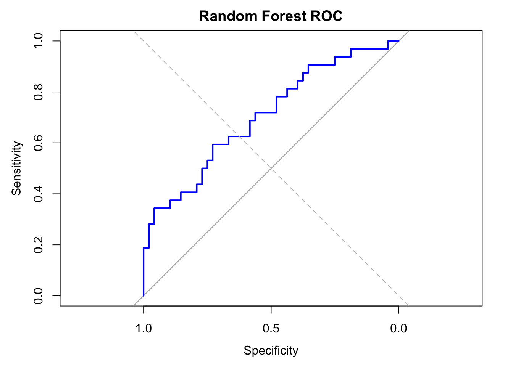

# load packages
rm(list=ls())
library(tidyverse)
library(ggcorrplot)
library(glmnet)
library(fastDummies)
library(pROC)
library(ranger)
library(e1071)
library(class)
library(xgboost)
# Load the clinical data
data_obesity <- read_csv("data/data-obesity.csv")
# Load gene expression data
data_expr <- read_csv("data/data-obesity-genes.csv")
# Known obesity genes
genes_obesity <- c("FTO", "MC4R", "LEP", "LEPR", "POMC", "PCSK1")
genes_all <- colnames(data_expr)[-1]
genes_other <- setdiff(genes_all, genes_obesity)
# Based on the number of missing data, let's delete bp.2s, bp.2d
# and use complete-cases analysis
data_obesity <- data_obesity %>%
dplyr::select(-bp.2s, -bp.2d, -BMI, -hip) %>%
na.omit()Common steps
Introduction
We are still working to better understand obesity. Previous studies have shown that the expression of several genes FTO, MC4R, LEP, LEPR, POMC, and PCSK1 is associated with the condition. However, it remains unclear whether these are the only genes involved. We are thus interested in exploring whether a predictive model can be built using less well-known genes along with clinical data.
We will revisit Random Forest as an example of a bagging approach. Next, we will apply boosting using XGBoost. Finally, we will combine the predictions from multiple models using a stacking ensemble.
Load packages
Split Data
# join gene expression data with clinical data
data <- data_obesity %>%
left_join(data_expr, by = "id") %>%
dplyr::select("obese", all_of(genes_other))
data <- data_obesity %>%
left_join(data_expr, by = "id") %>%
dplyr::select("obese", all_of(genes_all))
data <- data_obesity %>%
left_join(data_expr, by = "id") %>%
dplyr::select("obese", all_of(genes_all[1:100]))
# three-way split: train (60%), validation (20%), test (20%)
set.seed(123)
n <- nrow(data)
idx <- sample(seq_len(n))
idx_train <- idx[1:floor(0.6 * n)]
idx_valid <- idx[(floor(0.6 * n) + 1):floor(0.8 * n)]
idx_test <- idx[(floor(0.8 * n) + 1):n]
data_train <- data[idx_train, ]
data_valid <- data[idx_valid, ]
data_test <- data[idx_test, ]
# To keep focus on the important parts, we will skip feature engineering
# and we will just scale all data
x_train <- data_train %>%
dplyr::select(-obese) %>%
as.matrix() %>%
scale()
x_valid <- data_valid %>%
dplyr::select(-obese) %>%
as.matrix() %>%
scale()
x_test <- data_test %>%
dplyr::select(-obese) %>%
as.matrix() %>%
scale()
# Separate and format target variable
y_train <- data_train$obese
y_train <- ifelse(y_train == "Yes", 1, 0)
y_valid <- data_valid$obese
y_valid <- ifelse(y_valid == "Yes", 1, 0)
y_test <- data_test$obese
y_test <- ifelse(y_test == "Yes", 1, 0)Bagging: Random Forest
# Combine predictors and target into a single data frame for ranger
df_train <- data.frame(y = factor(data_train$obese), x_train)
df_valid <- data.frame(y = factor(data_valid$obese), x_valid)
df_test <- data.frame(y = factor(data_test$obese), x_test)
# Tune RF
# Grid search over mtry and min.node.size
results <- expand.grid(
mtry = c(5, 10, 20, 50),
min.node.size = c(1, 5, 10)
)
# Create a function to evaluate AUC for a set of parameters
tune_rf <- function(mtry_val, min_node) {
rf_model <- ranger(
y ~ ., data = df_train,
probability = TRUE,
num.trees = 500,
mtry = mtry_val,
min.node.size = min_node,
seed = 123
)
rf_probs <- predict(rf_model, data = df_valid)$predictions[, "Yes"]
roc_obj <- roc(df_valid$y, rf_probs, quiet = TRUE)
auc_val <- auc(roc_obj)
return(auc_val)
}
results$AUC <- mapply(tune_rf, results$mtry, results$min.node.size)
# Find best combination
best_params <- results[which.max(results$AUC), ]
print(best_params)
## mtry min.node.size AUC
## 4 50 1 0.6601504
# Refit final tuned Random Forest model with best hyperparameters
rf_model <- ranger(
y ~ ., data = df_train,
probability = TRUE,
num.trees = 500,
mtry = best_params$mtry,
min.node.size = best_params$min.node.size,
seed = 123,
importance = "impurity"
)
# Predict and evaluate on test data
rf_probs <- predict(rf_model, data = df_test)$predictions[, "Yes"]
rf_preds <- ifelse(rf_probs > 0.5, "Yes", "No")
# Confusion matrix
conf_matrix <- table(Predicted = rf_preds, Actual = df_test$y)
print(conf_matrix)
## Actual
## Predicted No Yes
## No 38 19
## Yes 9 8
# Accuracy and AUC
accuracy <- sum(diag(conf_matrix)) / sum(conf_matrix)
roc_obj <- roc(df_test$y, rf_probs)
auc_val <- auc(roc_obj)
plot(roc_obj, col = "blue", lwd = 2, main = "Random Forest ROC")
abline(a = 0, b = 1, lty = 2, col = "gray")
cat("AUC:", auc(roc_obj), "\n")
## AUC: 0.6315997
rf_conf_matrix <- conf_matrix
rf_acc <- accuracy
rf_auc <- auc_val
rf_best_parm <- best_params
# feature importance
importance <- rf_model$variable.importance
# Convert to data frame
importance_df <- data.frame(
feature = names(importance),
importance = importance
)
# Plot top features
importance_df <- importance_df %>%
arrange(desc(importance))
ggplot(importance_df[1:20, ], aes(x = reorder(feature, importance), y = importance)) +
geom_col(fill = "darkgreen") +
coord_flip() +
labs(
title = "Variable Importance (Random Forest)",
x = "Feature", y = "Importance (Gini Impurity)"
) +
theme_minimal()Boosting: XGBoost
# Prepare data
dtrain <- xgb.DMatrix(data = x_train, label = y_train)
dvalid <- xgb.DMatrix(data = x_valid, label = y_valid)
dtest <- xgb.DMatrix(data = x_test)
# Define parameter grid
xgb_grid <- expand.grid(
eta = c(0.01, 0.1, 0.3),
max_depth = c(3, 5, 7)
)
# Tuning loop
xgb_grid$AUC <- NA
for (i in 1:nrow(xgb_grid)) {
params <- list(
objective = "binary:logistic",
eval_metric = "auc",
eta = xgb_grid$eta[i],
max_depth = xgb_grid$max_depth[i]
)
xgb_model <- xgb.train(
params = params,
data = dtrain,
nrounds = 100,
verbose = 0
)
valid_probs <- predict(xgb_model, newdata = dvalid)
roc_obj <- roc(y_valid, valid_probs, quiet = TRUE)
xgb_grid$AUC[i] <- auc(roc_obj)
}
# Best model
best_params <- xgb_grid[which.max(xgb_grid$AUC), ]
print(best_params)
## eta max_depth AUC
## 2 0.1 3 0.6466165
# Refit using best parameters
final_xgb <- xgb.train(
params = list(
objective = "binary:logistic",
eval_metric = "auc",
eta = best_params$eta,
max_depth = best_params$max_depth
),
data = dtrain,
nrounds = 100,
verbose = 0
)
# Test predictions
xgb_probs <- predict(final_xgb, newdata = dtest)
xgb_preds <- ifelse(xgb_probs > 0.5, "Yes", "No")
# Evaluation
xgb_conf_matrix <- table(Predicted = xgb_preds, Actual = y_test)
xgb_acc <- sum(diag(xgb_conf_matrix)) / sum(xgb_conf_matrix)
xgb_auc <- auc(roc(y_test, xgb_probs))
print(xgb_conf_matrix)
## Actual
## Predicted 0 1
## No 41 20
## Yes 6 7
cat(sprintf("XGBoost Test Accuracy: %.3f\n", xgb_acc))
## XGBoost Test Accuracy: 0.649
cat(sprintf("XGBoost Test AUC: %.3f\n", xgb_auc))
## XGBoost Test AUC: 0.597Stacking
Let’s combine the predictions from Random Forest, SVM and KNN models using a stacking ensemble approach. We will use logistic regression as the meta-model. We have already tuned Random Forest, so we will need to tune SVM and KNN before proceeding with stacking.
SVM
# SVM with linear kernel
# Prepare data for SMV
data_train_svm <- data_train %>%
mutate(obese = factor(obese, levels = c("No", "Yes")))
data_valid_svm <- data_valid %>%
mutate(obese = factor(obese, levels = c("No", "Yes")))
# Try different cost values for SVM
cost_grid <- c(0.01, 0.1, 1, 10)
svm_results <- data.frame(cost = cost_grid, AUC = NA)
for (i in seq_along(cost_grid)) {
model <- svm(obese ~ ., data = data_train_svm, cost = cost_grid[i], probability = TRUE)
pred <- predict(model, newdata = data_valid_svm, probability = TRUE)
probs <- attr(pred, "probabilities")[, "Yes"]
svm_results$AUC[i] <- auc(roc(data_valid_svm$obese, probs, quiet = TRUE))
}
# Find the best cost value based on AUC
best_cost <- svm_results$cost[which.max(svm_results$AUC)]
# Fit the final SVM model with the best cost
svm_model <- svm(obese ~ ., data = data_train_svm, cost = best_cost, probability = TRUE)
# Predict on validation and test sets
#svm_valid_pred <- predict(svm_model, newdata = data_valid_svm, probability = TRUE)
#svm_valid_probs <- attr(svm_valid_pred, "probabilities")[, "Yes"]
svm_test_pred <- predict(svm_model, newdata = data_test, probability = TRUE)
svm_test_probs <- attr(svm_test_pred, "probabilities")[, "Yes"]
# Accuracy and AUC for SVM
svm_preds <- ifelse(svm_test_probs > 0.5, "Yes", "No")
svm_acc <- mean(svm_preds == data_test$obese)
svm_auc <- auc(roc(data_test$obese, svm_test_probs, quiet = TRUE))
svm_best_cost <- best_costKNN
# Tune KNN using validation AUC
k_values <- c(3, 5, 7, 9, 11, 13, 15)
knn_results <- data.frame(k = k_values, AUC = NA)
for (i in seq_along(k_values)) {
pred <- knn(train = x_train, test = x_valid, cl = data_train$obese, k = k_values[i], prob = TRUE)
probs <- ifelse(pred == "Yes", attr(pred, "prob"), 1 - attr(pred, "prob"))
knn_results$AUC[i] <- auc(roc(data_valid$obese, probs, quiet = TRUE))
}
best_k <- knn_results$k[which.max(knn_results$AUC)]
knn_test <- knn(train = x_train, test = x_test,
cl = data_train$obese, k = best_k, prob = TRUE)
knn_test_probs <- ifelse(knn_test == "Yes", attr(knn_test, "prob"), 1 - attr(knn_test, "prob"))
# Accuracy and AUC for KNN
knn_preds <- ifelse(knn_test_probs > 0.5, "Yes", "No")
knn_acc <- mean(knn_preds == data_test$obese)
knn_auc <- auc(roc(data_test$obese, knn_test_probs, quiet = TRUE))Stacking base models
Meta-learner is trained on validation-set predicted probabilities from each base model (RF, SVM, KNN)
# get validation probabilities for each tuned base model
rf_valid_probs <- predict(rf_model, data = df_valid)$predictions[, "Yes"]
svm_valid_probs <- predict(svm_model, newdata = data_valid_svm, probability = TRUE)
svm_valid_probs <- attr(svm_valid_probs, "probabilities")[, "Yes"]
knn_valid <- knn(train = x_train, test = x_valid,
cl = data_train$obese, k = best_k, prob = TRUE)
knn_valid_probs <- ifelse(knn_valid == "Yes", attr(knn_valid, "prob"), 1 - attr(knn_valid, "prob"))
# Combine validation predictions for meta-model
stack_valid <- data.frame(
rf = rf_valid_probs,
svm = svm_valid_probs,
knn = knn_valid_probs,
obese = as.factor(data_valid$obese)
)
x_meta <- model.matrix(obese ~ . - 1, data = stack_valid)
y_meta <- as.numeric(stack_valid$obese) - 1
# Combine validation predictions for meta-model
stack_test <- data.frame(
rf = predict(rf_model, data = df_test)$predictions[, "Yes"],
svm = svm_test_probs,
knn = knn_test_probs
)
x_stack_test <- model.matrix(~ . - 1, data = stack_test)# Tune meta-model using Lasso regression
meta_model <- cv.glmnet(x_meta, y_meta, family = "binomial", alpha = 1)
best_lambda <- meta_model$lambda.min
cat("Best lambda:", best_lambda)
## Best lambda: 0.002816889
stack_probs <- predict(meta_model, newx = x_stack_test, s = "lambda.min", type = "response")
stack_preds <- ifelse(stack_probs > 0.5, "Yes", "No") |> factor(levels = c("No", "Yes"))
# Accuracy and AUC for stacked ensemble
stack_acc <- mean(stack_preds == data_test$obese)
stack_auc <- auc(roc(data_test$obese, as.numeric(stack_preds == "Yes"), quiet = TRUE))Results
results_table <- data.frame(
Model = c("Random Forest", "XGBoost", "SVM", "KNN", "Stacked Ensemble"),
Accuracy = c(rf_acc, xgb_acc, svm_acc, knn_acc, stack_acc),
AUC = c(rf_auc, xgb_auc, svm_auc, knn_auc, stack_auc)
)
results_table <- results_table %>%
mutate(Accuracy = round(Accuracy, 2),
AUC = round(AUC, 2))
print(results_table)
## Model Accuracy AUC
## 1 Random Forest 0.62 0.63
## 2 XGBoost 0.65 0.60
## 3 SVM 0.64 0.52
## 4 KNN 0.62 0.59
## 5 Stacked Ensemble 0.64 0.61